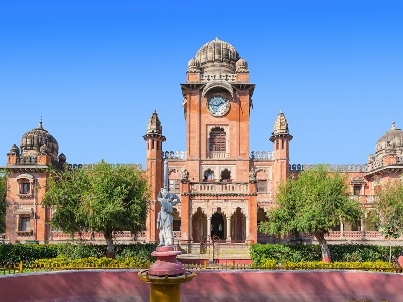

Gandhi Hall
Gandhi Hall, also known as Town Hall, is an iconic landmark in Indore. It was built in 1904 and named after Mahatma Gandhi. The hall features Indo-Gothic architecture and serves as a cultural venue for exhibitions and events.
Visitors can admire the grand structure and participate in various cultural activities hosted at the venue.
